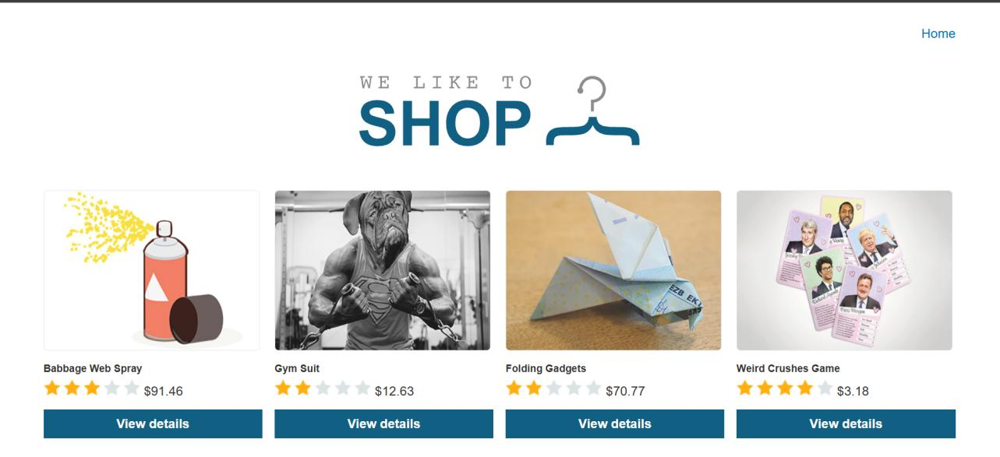
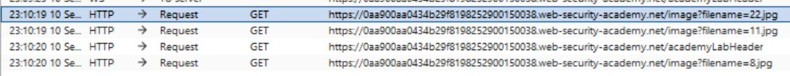
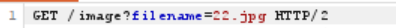
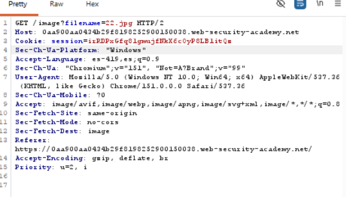
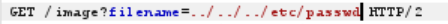
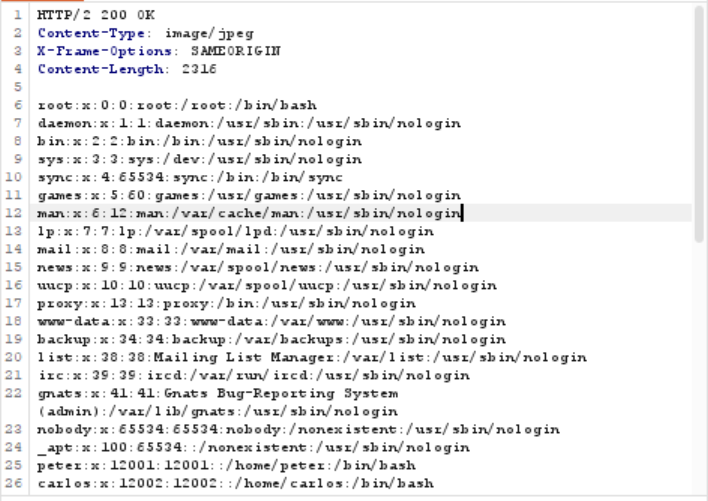
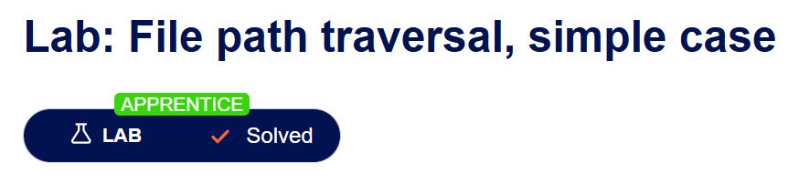

Road to Hall of Fame · Actividad 07 · PortSwigger Web Security Academy
File path traversal, simple case
Fuente oficial: portswigger.net/web-security/file-path-traversal/lab-simple
Apprentice
Path Traversal / Directory Traversal (CWE-22). Explotación del lado del servidor mediante manipulación del parámetro que referencia un nombre de archivo, sin validación ni canonicalización adecuada de la ruta resultante.
La aplicación vulnerable es una tienda en línea que permite visualizar imágenes de los
productos a través del endpoint /image?filename=NOMBRE. El objetivo del
laboratorio es abusar de este mecanismo para leer el contenido del archivo
/etc/passwd del sistema operativo subyacente, demostrando que el servidor
no restringe el acceso a archivos fuera del directorio de imágenes previsto.
El Path Traversal (o Directory Traversal) ocurre cuando una aplicación recibe un dato del
usuario (por ejemplo, un nombre de archivo) y lo concatena directamente a una ruta del
sistema de archivos sin validarlo. En Unix/Linux, cada ../ hace que el sistema
operativo suba un nivel en la jerarquía de directorios; esta resolución ocurre a nivel de
kernel y es ajena a la lógica de la aplicación.
Si el servidor construye una ruta como base_dir + "/" + filename, y
filename es ../../../etc/passwd, la ruta resultante equivale a
/etc/passwd, aunque el desarrollador nunca la escribió de forma literal. La
aplicación la entrega igualmente porque nunca comparó la ruta final contra el directorio
base permitido. Tres niveles de ../ bastan para llegar a la raíz del sistema
de archivos desde cualquier subdirectorio razonablemente profundo, y de ahí descender
hacia etc/passwd.
Cuando la aplicación intenta filtrar la entrada de forma ingenua (por ejemplo, eliminando
../ una sola vez), existen variantes que evaden esa validación insuficiente:
| Variante | Ejemplo de payload | Filtro que evade |
|---|---|---|
| Traversal simple | ../../../etc/passwd |
Ausencia total de validación (caso de este laboratorio). |
| Codificación URL | ..%2f..%2f..%2fetc%2fpasswd |
Filtros que buscan el carácter "/" literal antes de decodificar la URL. |
| Doble codificación | ..%252f..%252fetc%252fpasswd |
Servidores/proxies que decodifican una sola vez. |
| Sustitución no recursiva | ....//....//etc/passwd |
Filtros que eliminan "../" una sola vez (....// → ../ tras el reemplazo). |
| Ruta absoluta | /etc/passwd |
Filtros que solo bloquean secuencias relativas. |
El pilar principalmente afectado es la confidencialidad (exposición de
credenciales, configuración o archivos del sistema); en variantes combinadas con
escritura de archivos puede comprometerse también la integridad y, de forma indirecta,
la disponibilidad. En este laboratorio el impacto demostrado es lectura de
/etc/passwd, clasificada como CWE-22 (Improper Limitation
of a Pathname to a Restricted Directory) y encuadrada en
OWASP Top 10 2021 — A01:2021 Broken Access Control, ya que en el fondo
representa una falla de control de acceso sobre los recursos del sistema de archivos.
Se accede a la aplicación vulnerable (una tienda en línea) y se navega por la página principal para identificar la funcionalidad de carga de imágenes de producto, la cual constituye el vector de ataque.

Con el proxy de Burp Suite activo y el navegador configurado para enviar el tráfico a
través de él, se navega por el sitio y se revisa el historial de peticiones
(Proxy > HTTP history). Se identifica que las imágenes de los productos se solicitan
mediante el endpoint GET /image?filename=NOMBRE, lo cual confirma el
parámetro controlable por el usuario.

Se selecciona una de las solicitudes de imagen y se envía al módulo Repeater para su análisis y manipulación controlada.

Se revisan los encabezados completos de la solicitud (Host, Cookie de sesión, User-Agent, Referer, etc.) para comprender el contexto de la petición antes de modificarla.

En el valor del parámetro filename se sustituye el nombre de archivo original
por la secuencia de traversal ../../../etc/passwd, con el propósito de
retroceder desde el directorio de imágenes hasta la raíz del sistema de archivos y luego
descender hacia el archivo de credenciales del sistema.

Al enviar la solicitud modificada, el servidor responde con estado 200 OK
y devuelve en el cuerpo de la respuesta el contenido íntegro del archivo
/etc/passwd, confirmando que la aplicación no valida ni restringe la ruta
solicitada.

PortSwigger Web Security Academy confirma automáticamente la explotación exitosa marcando el laboratorio como Solved.

Payload utilizado:
Funcionamiento técnico:
/var/www/images/ + filename para localizar y servir el archivo solicitado.../ le indica al sistema de archivos que suba un nivel de directorio respecto al directorio base de imágenes (por ejemplo, de /var/www/images/ a /var/www/ y luego a /var/).../ para garantizar que, independientemente de la profundidad exacta del directorio base de imágenes, la ruta resultante llegue a la raíz del sistema de archivos (/).etc/passwd, que en sistemas Unix/Linux contiene el listado de cuentas de usuario del sistema operativo (nombre de usuario, UID, GID, directorio home y shell asignado)./etc/passwd sea legible por el proceso del
servidor web (aunque no contenga los hashes de contraseñas, que residen en
/etc/shadow) lo convierte en un objetivo estándar para demostrar path
traversal, ya que su formato es predecible y fácilmente verificable.
../, enlaces simbólicos y codificaciones) antes de compararla, y verificar que la ruta canonicalizada siga estando dentro del directorio base permitido.../, ..\, variantes codificadas en URL o Unicode) en lugar de intentar solo removerlas con expresiones regulares simples, que suelen ser evadibles.../, %2e%2e, rutas absolutas) para detectar intentos de explotación.